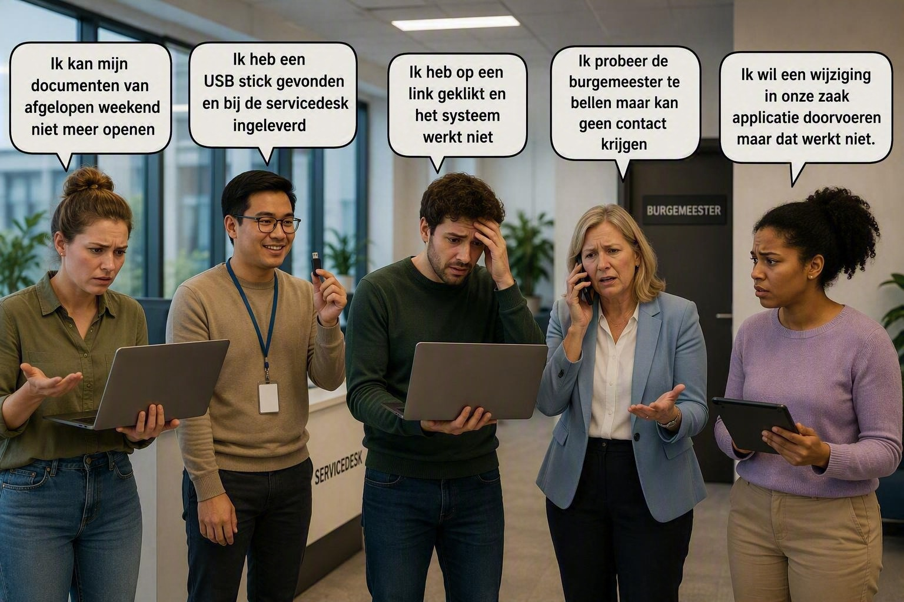

Het is maandagochtend. Je loopt het stadhuis binnen en merkt direct dat er iets mis is.
Bij de balies staan inwoners in de rij. De telefoons rinkelen onafgebroken. Medewerkers lopen gehaast door de gangen en overal hoor je dezelfde vraag:
"Doet jouw systeem het nog?"
Al snel wordt duidelijk wat er aan de hand is. Een cyberaanval heeft grote delen van de organisatie platgelegd.
Uitkeringen kunnen niet worden verwerkt. Zaken kunnen niet worden geraadpleegd. Medewerkers kunnen documenten niet openen. De burgemeester is niet bereikbaar en verschillende applicaties geven alleen foutmeldingen.
De druk loopt op. Burgers wachten op hulp, maar de systemen die daarvoor nodig zijn werken niet meer.
Terwijl iedereen probeert te achterhalen wat er gebeurd is, krijg jij een belangrijke opdracht.
Jouw missie Jij maakt onderdeel uit van het digitale onderzoeksteam dat de aanval moet onderzoeken.
Je neemt plaats achter een bureau, klapt je laptop open en begint de beschikbare informatie te analyseren. Er zijn logbestanden, e-mails, meldingen van medewerkers en aanwijzingen uit verschillende systemen.
Alle sporen lijken naar één persoon te leiden:
Patient Zero In de wereld van cybercrime is Patient Zero de eerste persoon of het eerste systeem dat geïnfecteerd raakt tijdens een aanval.
Wat de oorzaak ook is: vanaf Patient Zero heeft de aanval zich verder door de organisatie verspreid.

Op de foto zie je: Kim, Mark, Jan, Rianne & Margot